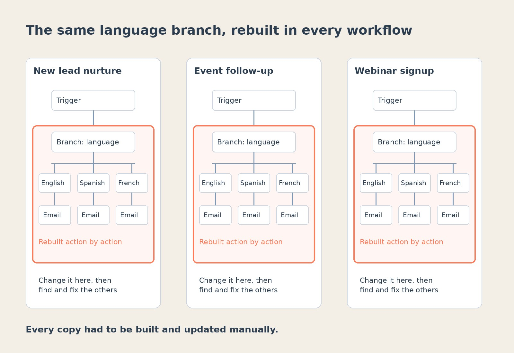
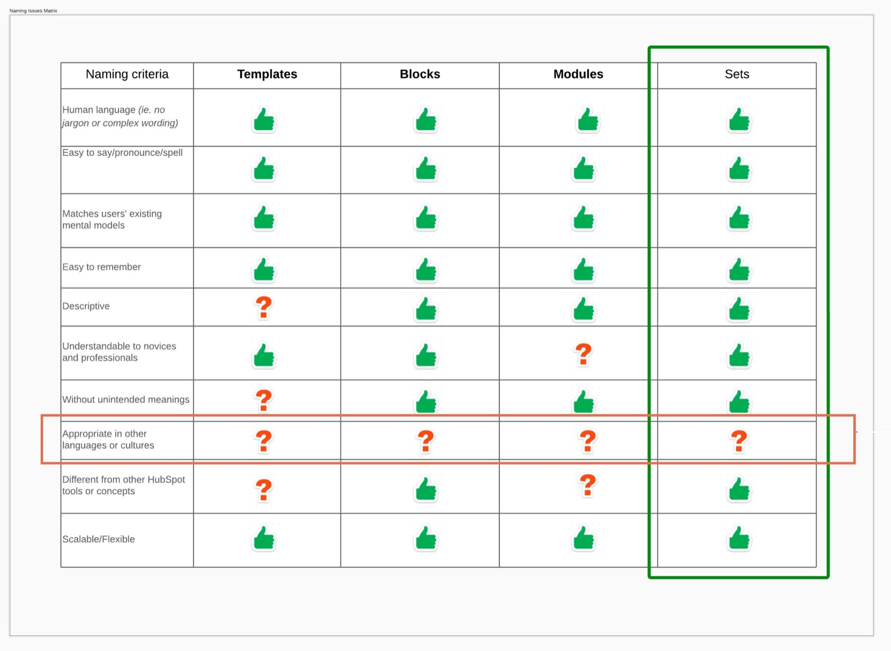
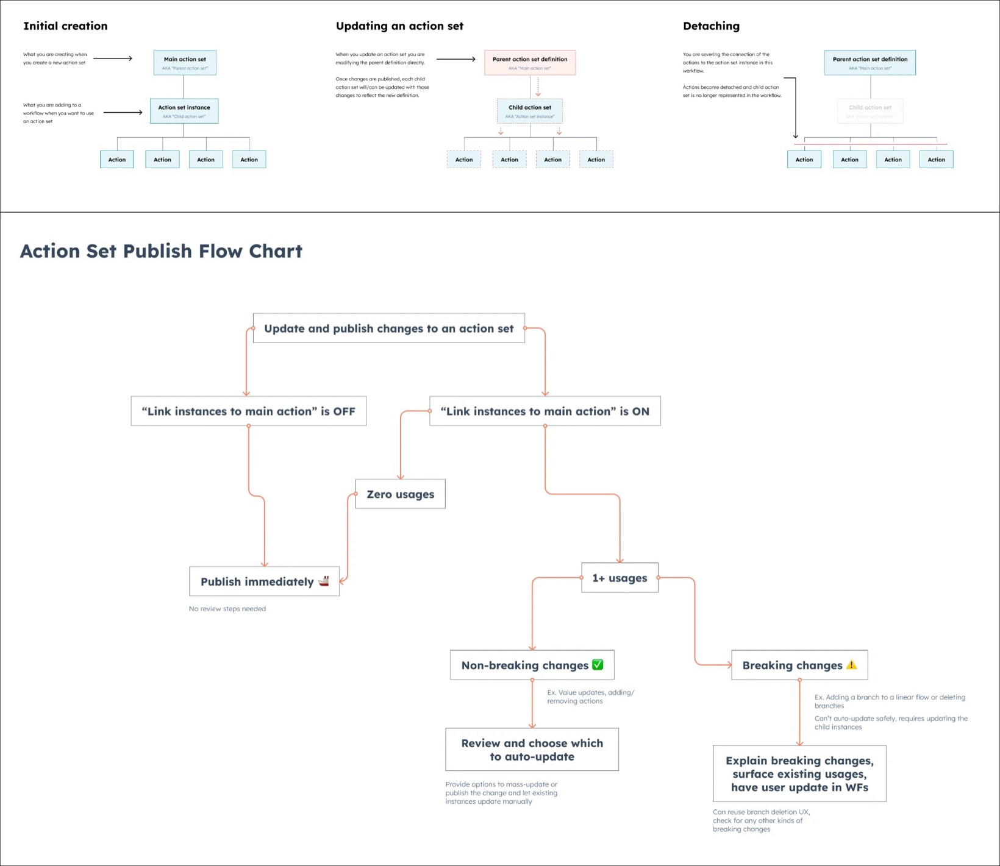
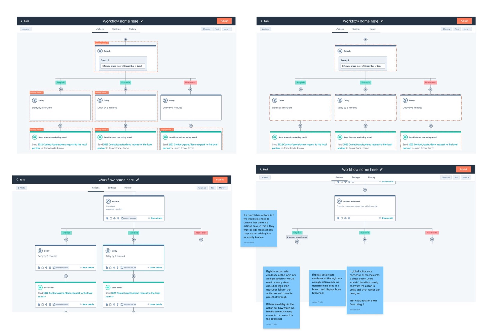

My role
I led design and research for Action Sets on the workflows team. I worked with a product manager, a content designer, and four front-end and back-end engineers.
I planned and ran all of the research, from discovery calls and a comic strip concept test to usability testing. I owned the interaction design and specs for the first version, and I designed and tested a second version that linked every copy of a set to the original.
I started on the project in April 2023. The first version went to alpha in November 2023 and launched to Operations Hub Enterprise customers in December 2023. I designed the second version and tested it in December 2023. After a team reorg in early 2024, another designer took over the next round of changes, and the second version never launched.
01 · Context
Enterprise teams had a lot of people building a lot of workflows
HubSpot workflows automate the work behind sales, marketing and operations. Each one starts with a trigger and runs a series of actions, like sending an email, waiting a few days, branching on a property, or running custom code. As customers grow with HubSpot, they build more workflows, and more people on the team start building them.
On Operations Hub Enterprise, HubSpot's top plan for operations teams, that adds up fast. One systems director we talked to managed nearly 200 workflows. The person who owns automation, usually an admin or ops manager, wants the rest of the team to build workflows without things going wrong.
02 · Problem
Customers rebuilt the same steps in every workflow, then fixed each copy by hand
Many workflows share the same pieces: a branch that routes contacts by language, a set of checks before a deal moves forward, or a block of custom code. HubSpot had no way to save those pieces and reuse them. Customers either rebuilt them action by action, or cloned a whole workflow and deleted what they didn't need, which risked missing something in a large one. When a shared piece needed to change, they had to find every workflow that used it and update each one manually.
As more people created workflows, admins saw more inconsistencies and more chances for a workflow to be wrong. One customer wrote on the ideas forum, "Sometimes we make updates which require us to add 15+ actions to several workflows and currently we have to make all of those updates one action at a time."
"Sometimes we make updates which require us to add 15+ actions to several workflows and currently we have to make all of those updates one action at a time."
Customer, HubSpot ideas forum

The problem was worst for large teams with several people building workflows, which made it a good fit for Enterprise, where HubSpot wanted more advanced features that gave customers a reason to upgrade.
Customer feedback told us what people wanted. What we didn't know yet was how they actually reused their work.
How might we make building many workflows faster and safer for large teams, in a way that makes Enterprise worth upgrading to?
03 · Strategy
Six discovery calls turned a pile of requests into one idea
The goal was to make building many workflows faster, and to give admins a way to guide their teams.
I planned and ran discovery calls with six customers who cloned workflows often or had asked for this in the ideas forum. Their reuse cases included language branches, deal checks, custom code, and the same email campaign across several blogs. They wanted it to save time, keep their work accurate, and keep workflows consistent. As one put it, "I want a head start. I don't want to always have to start from scratch." Most reuses weren't exact copies, since a property or an email often changed each time. Everyone we asked wanted to control who could edit a shared set, though no one said it would stop them from using it. A few already reused work in other tools, like Zapier's Sub-Zaps, and liked that a change made in one place reached everywhere it was used.
"I want a head start. I don't want to always have to start from scratch."
Customer, discovery call
From there my PM and I scoped the idea: let customers save a group of actions as a kind of mini template, find it in the action panel, and add it to any workflow of the same type.
04 · Concept validation
We drew a comic strip, and customers told us edits should reach every copy
We had two very different ways to build this and needed customer reactions before designing either in detail. A prototype would have pulled people into the UI, so I used a comic strip test. Each concept was a short story of two coworkers, where one saves a language branch and the other reuses it.
In the Saved Actions concept, the actions were a new kind of action you drag onto the canvas, and you could change your copy freely. In the Shared Workflow concept, the actions were their own workflow, and other workflows sent contacts to it and waited for them to come back.
I ran it with five people, three of them customers. Three picked Saved Actions outright, and the other two wanted parts of both. One said, "The 'Shared Workflow' concept seems like a beta version of the 'Saved Actions' concept."
"The 'Shared Workflow' concept seems like a beta version of the 'Saved Actions' concept."
Customer, comic strip test
The biggest finding was about editing. Most people assumed a change to the saved set would update every workflow that used it, and that editing a copy in your own workflow would break it away from the original. They didn't want changes pushed out without warning, and one person asked for a draft step so edits could be reviewed before they went live. I went with Saved Actions, since most people preferred it, and linked updates became the core of the second version.
05 · Key decisions
Engineering said linked updates had to wait, so we shipped copies first
Where sets get built
After the comic strip test, I worked out where sets would live and how people would build them, starting with low-fidelity wireframes of saved "snippets" in the action panel. We considered three ways to build a set: as a single collapsed action, as a container around actions on the canvas, and in its own editor. We went with the editor, since building on the canvas wasn't technically feasible at the time.
What to call them
Participants didn't agree on a name. They called it a saved branch, a mini flow, a block, and a template. Our content designer made the case for the strongest options, and the team chose "action sets." It did slightly better in the moderated test, held up in unmoderated testing, and avoided "template," which already meant something else in workflows.

Shipping copies before linked updates
Our original design linked every copy to the original set, which is what customers expected. Engineering pushed back on what was feasible for the first release. Rather than delay it, my PM and I agreed to ship sets as independent copies, since saving and reusing actions was valuable on its own. My job was to make the difference clear to customers. The panel says that changes to your copy won't affect the original set, and editing the original shows a notice that workflows already using it won't change.
Designing linked updates for v2
While v1 was being built, I designed v2: global action sets. I mapped how creating, updating and detaching would work, and how publishing should behave when a change could break workflows that already used the set.

I also explored how a global set should show up on the canvas. Collapsing it into a single action would have hidden what the set was doing, and it raised questions about branches and execution logs. So we tested a version that kept every action visible and tagged each one with the set it came from.

In December 2023, I tested the prototype with six workflow builders in an unmoderated study. Only two of the six found the global setting when creating a set, and average confidence was 3 out of 7. All five who updated a set expected the change to reach other workflows automatically, not after a manual update. When we asked what "global action set" meant, the answers were all over the place. One participant said, "I believe it means that it will send [an] outreach in a different language."
"I believe it means that it will send [an] outreach in a different language."
Participant, v2 usability test
06 · Final design
Adding a set works just like adding any other action


Once we agreed to ship sets as independent copies, we finished the first version around our original goal: making it faster to build workflows that share the same steps.
We put action sets in the action panel next to HubSpot's own actions, so adding a set works the same way as adding any other action. That kept it familiar, since the Shared Workflow concept had confused some people in testing.
Customers can save a group of actions as a set, starting from scratch or from the workflow they're in, and build it in its own editor. Saved sets appear in their own section of the action panel. Each set shows a description and a preview before you add it, and it can go anywhere in a workflow, including inside a branch. Once it's in, its actions can be changed like any others.
Action Sets went to alpha in November 2023 and launched to Operations Hub Enterprise customers in December 2023.
07 · Impact
Action Sets contributed to 106 Enterprise upgrades
Our goal was to make workflows easier to build and manage for large teams, and to give customers a reason to upgrade to Enterprise. Action Sets was one of the features behind 106 accounts upgrading to Operations Hub Enterprise.
Within two months of launch, about 2,400 customers had used Action Sets, and a quarter of them inserted a set more than 200 times. That saved each of those heavy users at least 3 hours of rebuilding the same steps.
The linked updates customers asked for in research never shipped. After a team reorg in early 2024, another designer iterated on the version I tested, but it was deprioritized before launch.
Reflection
What I'd do differently
Looking back, I would have spent more time weighing what people preferred against what it would take to build and how easy it would be to use. Saved Actions was the concept people preferred, but it was much more technically complicated to build.
The comic strip test was good for early reactions without influencing too much, but it made it hard to judge how something works when you can't click through it. If I'd pushed for testing with a working prototype, we might have learned that the Shared Workflow concept would have been just as successful and a lot easier to build.
I'd also keep the scope tighter. I folded saving custom code into Action Sets, hoping to solve both problems at once. But people think of their code as a single file they reuse, not a group of actions, and that should have been its own feature.